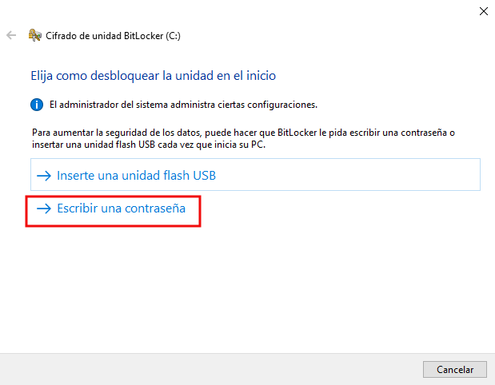
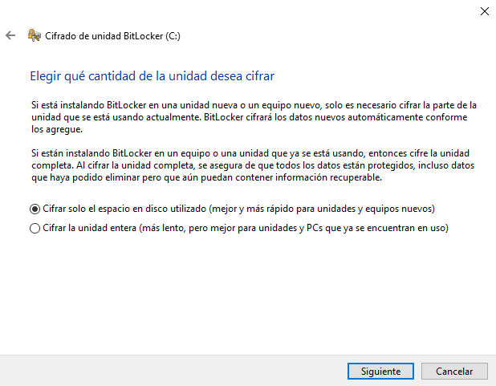

Práctica 1. Cifrado con Bitlocker
1. Introducción
Esta práctica hay que realizarla sobre un equipo cliente Windows 10 de vuestro subdominio para cifrar un nuevo disco que deberéis crear. Como ejemplo, podéis crear un disco con estas características:
- Creamos un nuevo disco duro de 5 GB.
- Particionar el disco y asignarle volumen (por ejemplo F).
2. Trabajo a realizar
Para cifrar el disco duro de vuestro equipo cliente Windows 10, hay que utilizar la característica BitLocker que viene incluida por defecto en Windows 10. Para utilizar la característica, hay que ir a 'Panel de control'.
Figura 1. Acceso al Panel de Control.
Una vez se ha accedido al Panel de control, hay que seleccionar 'Cifrado de unidad Bitlocker'.
Figura 2. Acceso al Cifrado de unidad BitLocker.
Una vez aparece la pantalla de Bitlocker, aparecerán las unidades que se pueden cifrar. Para este caso, se tiene disponible la unidad C: (lugar donde está instalado el sistema operativo). Hay que pulsar sobre 'Activar Bitlocker' (ver imagen inferior).
Figura 3. Activación de BitLocker.
Cabe la posibilidad de que al activar Bitlocker, el sistema operativo Windows 10 no pueda utilizar el Módulo de BitLocker debido al mensaje que aparece en la siguiente imagen.
Figura 4. Mensaje de error - Activación de BitLocker.
Esto es debido a que se tiene un sistema Windows 10 sin TPM compatible. Para dar solución al mensaje anterior, hay que realizar lo siguiente:
1. Acceder la directiva de grupo para proceder a su edición mediante el buscador o pulsando Windows + R y escribir gpedit.msc.
Figura 5. Acceso a la directiva de grupo.
2. Hay que acceder al nodo del árbol siguiente:
- Directiva equipo local --> Configuración del equipo --> Plantillas administrativas --> Componentes de Windows --> Cifrado de unidad BitLocker --> Unidades del sistema operativo y Requerir autenticación adicional al iniciar. Hay que habilitarla y seleccionar Permitir Bitlocker. Pulsar Aceptar para consolidar el cambio.
Figura 6. Edición de la directiva de grupo.
A continuación, hay que volver a la pantalla (Figura 3) para proceder a la activación de BitLocker. Nos aparece una nueva pantalla (Figura 7) donde hay que seleccionar 'Escribir una contraseña'.

Figura 7. Selección de cómo desbloquear la unidad de inicio.
Insertamos una contraseña segura por duplicado. La contraseña ha de estar compuesta de:
- Longitud de 8 a 256 caracteres.
- Letras en mayúsculas y minúsculas.
- Números.
- Símbolos/espacios.
Esto nos vale para establecer una clave que podamos recordar. En este ejemplo, vamos a utilizar la contraseña Eeupqtc,10.
Figura 8. Ingreso de la contraseña segura.
El siguiente paso nos pide guardar la clave de recuperación. Para guardar la clave, utilizaremos un sistema de almacenamiento externo al sistema cifrado:
Figura 9. Guardar la clave de recuperación en un archivo.
A continuación, hay que seleccionar un disco externo al sistema para guardar el archivo, en este caso de ejemplo, se guarda en el directorio Privado ubicado en el servidor principal.
Figura 10. Guardar archivo en disco externo.
En la imagen inferior, se puede observar el fichero guardado en el directorio remoto.
Figura 11. Fichero guardado en disco externo.
Una vez guardado el fichero, pulsamos 'Siguiente', y nos aparece una nueva ventana donde nos solicita la selección que se desea cifrar indicando los pros/contras de elegir cifrar la unidad completa o sólo el disco utilizado. Para este caso de ejemplo, se selecciona la 1ª opción ' Cifrar solo el espacio en disco utilizado'.

Figura 12. Selección de cifrado del espacio en disco utilizado.
A continuación, pulsamos 'Siguiente' para continuar. Aparece una nueva ventana donde hay que seleccionar el modo de Cifrado. Para este caso de ejemplo, se selecciona la 1ª opción ' Modo de cifrado nuevo', dado que la unidad C:\ no se va a mover.

Figura 13. Selección del modo de cifrado.
A continuación, pulsamos 'Siguiente' para continuar. Aparece una nueva ventana donde nos pregunta si se está preparado para que se realice la acción de cifrado. Para continuar con el proceso, pulsamos 'Continuar'.
Figura 14. Comenzar con el proceso de cifrado.
Aparece una nueva ventana donde podremos reiniciar el equipo ahora o más tarde. Pulsamos 'Reiniciar ahora' para probar el cifrado.

Una vez se reinicie el sistema, nos solicitará la contraseña de cifrado del disco. Sin esta clave, los datos no podrán ser accedidos de ningún modo. Ingresamos la contraseña y pulsamos 'Enter' para continuar.
Figura 15. Ingresar la contraseña de cifrado.
Si se pulsa la tecla 'Esc', entraríamos en modo de recuperación, donde habría que introducir la clave de recuperación que se guardó en el disco externo. Ejemplo, la clave del fichero guardado anteriormente es: 338195-269159-569041-492668-044242-421322-280423-701613.
El sistema arrancará de forma normal, pero estará cifrando los datos. Podemos comprobarlo en el apartado 'Cifrado de unidad Bitlocker' del Panel de Control. Cuando termine, nos mostrará que la unidad está ya cifrada, tal y como muestra la siguiente imagen (C: Bitlocker activado).
Figura 16. Acceso al cifrado de unidad Bitlocker.
Como se puede observar en la imagen, el sistema nos informa que BitLocker está activado. También, nos ofrece las siguientes posibilidades:
1. Suspender la protección. Si se selecciona, se dejará de cifrar el disco por lo que los datos ya no estarán protegidos.
2. Realizar una copia de seguridad de la clave de recuperación.
3. Cambiar la contraseña. Se puede cambiar la contraseña inicial donde esta ha de estar compuesta de:
- Longitud de 8 a 256 caracteres.
- Letras en mayúsculas y minúsculas.
- Números.
- Símbolos/espacios.
4. Eliminar la contraseña. Si se selecciona esta opción, dada que la contraseña es el único modo que se ha establecido para desbloquear la unidad, no nos dejará eliminarla a no ser que se establezca otro modo de desbloqueo.
5. Desactivar BitLocker. Si se selecciona esta opción, se descifrará la unidad.
Verificación del estado de Bitlocker
El proceso de cifrado puede tardar un tiempo, especialmente si el disco ya contiene muchos datos.
Para verificar el estado de BitLocker abrimos una consola cmd como administrador o Powershell y ejecutamos el siguiente comando:
C:\manage-bde –status

Como se puede observar en la imagen superior, nos informa que el proceso de cifrado está en progreso, el método de cifrado es AES-128 en modo XTS.
2.1 Comprobar que no podemos acceder al disco cifrado
Una vez que el disco ha sido cifrado, podemos arrancar con un Live CD o Live USB y comprobar si tenemos acceso al disco. Por ejemplo, se podría utilizar una ISO de CAINE, que es una distribución de linux especializada en informática forense, para intentar montar el volumen cifrado.
3. Cifrado con EFS
En este apartado, tienes que realizar una prueba de cifrado con EFS sobre una carpeta a la que llamarás test_cifradoEFS donde crearás un fichero cualquiera dentro de la misma. El cifrado ha de ser a la carpeta y las subcarpetas y archivos que contenga.
Una vez se cifre la carpeta, aparecerá un icono de un candado sobre ella indicando que su contenido está cifrado.
Lo mismo ocurre con el fichero que tiene la carpeta ya que hemos seleccionado cifrar la carpeta y las subcarpetas y archivos que contenga.
Cuestión: ¿En qué escenarios ves útil utilizar EFS para el cifrado de ficheros/directorios de un disco?
4. La importancia de las claves seguras
En el siguiente enlace tienes recomendaciones de seguridad de las contraseñas:
5. Entregar
Entrega un documento pdf con los siguientes capítulos:
- Verificación de Bitlocker. Captura de pantalla de la salida del comando manage-bde –status.
- Verificar con una distribución live si se puede montar y acceder al volumen cifrado.
- Verificación EFS y contestación a la cuestión. Captura/s de pantalla donde se pruebe que se ha cifrado la carpeta test_cifradoEFS. Contesta a la cuestión de este apartado.
- Reflexión. Contestación a la siguiente cuestión: Sin tener en cuenta posibles técnicas de hacking y teniendo en cuenta los métodos mencionados en el siguiente artículo y lo visto en los contenidos (6.2.1 Bitlocker (Windows) y EFS). ¿Cuál sería el método más seguro para proteger la información de los usuarios de un equipo?.
6. Rúbrica de calificación
|
Apartados |
Descripción |
Calificación |
||||
|---|---|---|---|---|---|---|
|
1. Cifrado con Bitlockers |
Descripción gráfica y textual del comando manage-bde –status. Verificación del cifrado mediante una distribución live. |
5 p |
||||
|
2. Cifrado EFS |
Descripción gráfica y textual donde se pruebe que se ha cifrado la carpeta test_cifradoEFS. Contesta a la cuestión de este apartado. |
3 p |
||||
|
3. Reflexión |
Realiza una reflexión a las cuestiones propuestas de manera correcta. |
2 p | ||||
Obra publicada con Licencia Creative Commons Reconocimiento No comercial Compartir igual 4.0